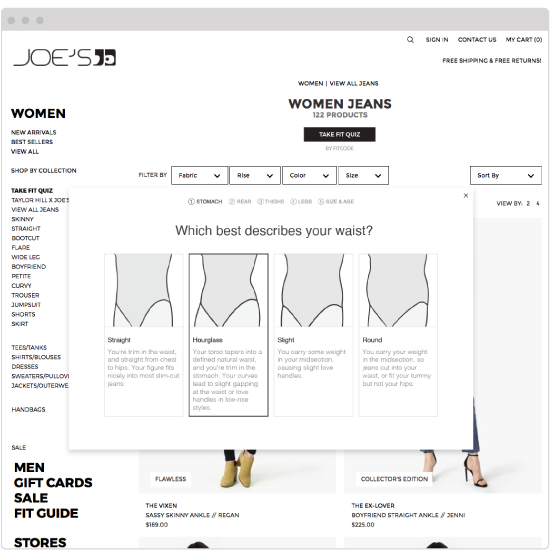

Fitcode Partner Integration
Dec 2014 - Aug 2018
Role: UX/UI Designer, Front-End Developer
At Fitcode our goal was to help people find a better fit in jeans when they shopped online. We measured and fit tested the inventory of a select list of jeans brands, provided a fit quiz to users, and recommended jeans that would flatter their figure type as they browsed the site. The first few iterations of this technology were not meeting our business needs though and we had to do a design overhaul to make a product that would work for a more partner-based business model.
Problem
At the time we had a good proof of concept when you visited the Fitcode website, but we needed a way to bring Fitcode to shoppers. We needed a service that we could provide to our partners, bringing measurable benefits to their business.
Process
There was an existing Fitcode Badge in the form of a browser extension that had most of the functionality that we needed. The product team met early on to decide what features would go forward to the new Fitcode Badge and what we would let go of. From the information the product team put together I explored the architecture of the product and constructed user flows to flesh out how it was going to work. Though these assets weren’t referenced very often by the team, they helped me memorize each feature and state of the Fitcode Badge, allowing me to speak to any structural issue or change during meetings and team conversations.
Architecture map for the Partner Badge
User flow for the most common user story, "I would like to buy a pair of jeans that fit."
I would also explore other topics of interest, including how a user’s size would affect what recommendations they see, how our integrated experience would interact with a partner’s existing sizing tools, and what areas of the site were best to introduce users to the badge.
Example of a graphic showing how the amount of badges change depending on the user's size
Working from designs I had done for the previous badge, I reorganized my files to account for each state in each screen size breakpoint in the partner’s site. I also used time saving techniques like symbols and linked files for repeating elements. This way I could stay on top of each design detail and change without wasting time wrestling with my design tools.
An Illustrator file of the Fitcode Badge designs showing artboard organization
After reviewing drafts of my designs with the product team, the final designs were organized into a presentation ready PDF that we would review with the partner team.
Example of a partner ready presentaion deck
When the design was approved I helped the small dev team build out the badge. I pitched in by organizing CSS styles for type, buttons, colors, and layouts. I also worked on image optimization, using .svg assets where ever I could and making sure each visual element was as lightweight as possible. When I worked with the dev team I was expected to commit my work in Git and coordinate with the team lead whenever my branch was ready to merge with the master branch.
As features and states were finished by the dev team I would switch gears and start testing for quality assurance, making sure the user had an experience we intended at every step. Just before launch day everyone on the product team would pitch in for a “bug bash” and we’d prioritize and fix any remaining bugs as a team.
Results
The Fitcode Badge went live in 2017 and was integrated on several popular brand retail sites including Hudson, AG and JOE’S Jeans. Over time we captured some really positive user data. Sites that used Fitcode’s recommendation badge saw a boost in sales by 200% and repeat business by 300%. Returns decreased by 58%.
Here are the final designs and a video showing the Fitcode Badge in action.
VIDEO: A walk through of the Fitcode Badge experience
Desktop Design
Fitcode quiz intro modal
Fitcode quiz question modal
Fitcode quiz complete modal
Shopping experience with Fitcode Badge
Mobile Design

Fitcode quiz intro modal

Fitcode quiz question modal

Fitcode quiz complete modal


{kind=link}
{kind=link}
{kind=link}
{kind=link}
{kind=link}
{kind=link}
{kind=link}
{kind=link}
{kind=link}